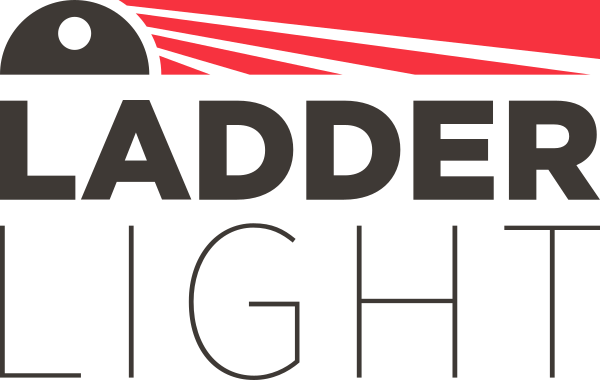

We are proud to present Ladder Light, an LED light and strobe built into a fire ladder end-cap with up to 36 hours of operation. Ladder Light was designed by firefighters to simply and quickly replace an existing end cap. This device improves departure visibility and safety when entering a window or stepping onto a roof. We are doing our small part to keep firefighters as safe as possible while they are risking their lives to keep us free from danger. Talk to us today to learn more about how your department can use Ladder Light to reduce injuries and save lives.